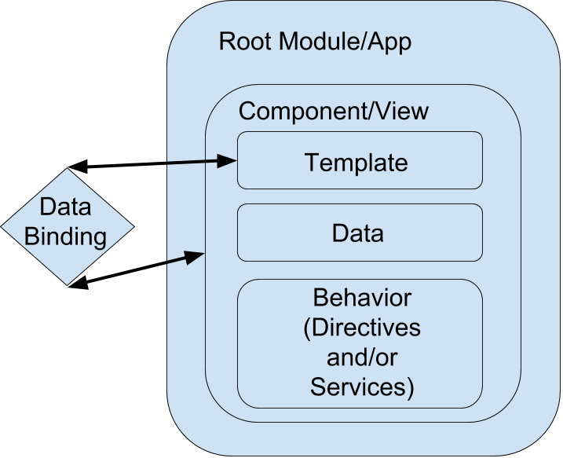
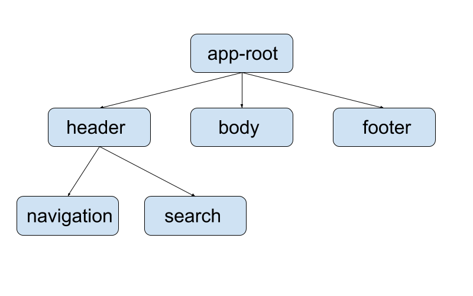
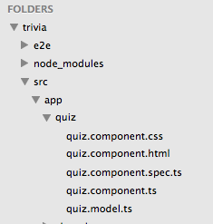

Navigate to kcwit.slack.com and share what your favorite beverage is in the #codingandcocktails channel!
Intro to Single Page Applications
Slides available at: http://bit.ly/CnCSpa
Powered By:
Our Hosts
The Nerdery
Mentors
kcwit.slack.com
Chatroom to ask questions, have fun, and keep in touch with other awesome ladies!
Disclaimer
- Varied backgrounds & skill levels
- Raise your hand and ask questions as we go
- Ask in Slack
- Flip your card over and write down or type a note of what you didn't quite understand to ask a mentor individually later
- It is likely someone else is wondering the same thing - There are no stupid questions!
What we'll cover
- What is a Single Page Application?
- How do SPAs compare to a traditional Website
- What is AJAX and how does it relate to SPA?
- Pros & Cons of SPAs
- SPA Frameworks & Libraries
- Angular2 Project
Introduction to Single Page Applications
Traditional Website
- Each page has it's own HTML file
- Home
- About
- Contact
- Navigate around through links pointing to the different HTML files
Single Page Application Basics
- Single index.html page
- Dynamically updates page based on user interaction - without reloading the entire page
- Better User Experience
SPA vs 'conventional' website

SPA Examples
Single Page Application Cons
- Anyone browsing without JavaScript enabled will not get all the functionality
- Search Engine Optimization (SEO)
- A data or JavaScript error can mean you have no content for bots to crawl
- Workarounds:
- Direct bots to prerendered content
- implement cache with prerender.io
Single Page Application Considerations
Modularity
Small pieces (aka components) that can be reused across page
- Header/Navigation Bar
- Footer
- Date Picker
- Slideshow
Routing
- Most SPA Frameworks/libraries include routing functionality
- "Virtual" Pages
http://www.example.com/abouthttp://www.example.com/#/about- HTML5 History API - Use back & forward buttons
Frameworks & Libraries
What's the difference?
SPA Frameworks & Libraries


And More!
Drink Break!
Angular2 Overview
How do we choose what framework or library to use?
- Project Requirements
- Personal Preference
Why did we choose Angular?
- Handy CLI offered to help scaffold our project quickly
- Documentation
Angular2 Building Blocks
- Modules
- Components
- Templates
- Directives
- Data Binding
- Services
- Routing
Angular uses TypeScript
- Microsoft Developed
- Compiled into JavaScript
- Makes using Angular2 easier
- .ts file extensions instead of .js
- Can write JavaScript in a TypeScript file but not the other way around
TypeScript
- Why use it?
- TypeScript provides us with "types" (as in number, string, boolean, etc)
- JavaScript is a loosely typed language - the type of value stored in a variable is flexible.
-
var drink = "Tom Collins"; -
drink = 3;
-
- TypeScript provides static types for JavaScript - when you set the variable value you also set the type.
-
var drink = "Mojito"; -
drink = true; //ERROR!
-
Angular CLI (Command Line Interface)
Documentation
- CLI does things the "right" way according to Angular style guide
- Install via npm
npm install -g angular-cli
What can we do with the CLI?
- Create a new project
ng new PROJECT_NAME_HERE - Serve your project - so we can see it in the browser
ng serve
What can we do with the CLI?
Scaffold components, services, directives, etc.
- Component
ORng generate component my-component-name-hereng g component my-component-name-here - Service
ng g service my-service-name-here
CLI Scaffolding
What can we do with the CLI?
- Build - Create dist directory with build artifacts
ng build - Deploy to GitHub Pages
ng github-pages:deploy --message "Optional commit message"
Let's Do This!
Work through Parts 0 & 1 of tonight's worksheet
Worksheet LinkAngular Building Blocks
Modules
- Very top level of the application
- Organizes your application into sections of functionality that are related
Components
- Fundamental building block
- Every app has at least one component
- A component can have child components
- Application is a tree of components 
Components
- Contains:
- Template
- Data
- Behavior
Components
- App root component - note the selector name:
import { Component } from '@angular/core'; @Component({ selector: 'app-root', templateUrl: './app.component.html', styleUrls: ['./app.component.css'] }) export class AppComponent { title = 'Cocktails are delicious!'; }
Components
- Template utilizes selector name for component placement
<!doctype html> <html> <head> <meta charset="utf-8"> <title>Trivia</title> <base href="/"> <meta name="viewport" content="width=device-width, initial-scale=1"> <link rel="icon" type="image/x-icon" href="favicon.ico"> </head> <body> <app-root>Loading...</app-root> </body> </html>
Components
- Code Structure
- HTML & CSS files are bundled together in the component's directory
- Spec file is a test file - we won't use this tonight
- Component's CSS file changes styles only on the component, not on the entire page/app
Templates
- Written in HTML
- Cannot use:
<script><html><body><base>- Template specified in *.component.ts file
- Multi-line Inline Template
template: `<div> <p>Hey, my name's Microsoft. Can I crash at your place tonight?</p> <p>{{myObviousAnswer}}</p> </div>`- Individual HTML File
templateUrl: './my-header.component.html'
Templates
- Add a component to your template:
- In the *.component.ts file a selector is defined in the component's metadata:
- Add the selector to the parent component's template:
<app-quiz></app-quiz> - That markup in the parent template gets replaced with the contents of quiz.component.html
@Component({ selector: 'app-quiz', templateUrl: './quiz.component.html',
styleUrls: ['./quiz.component.css']
})Interpolation
An expression that Angular evaluates and converts to a string. Surrounded by double curly braces: {{ }}
{{3 + 5}} // 8<p>My age is {{getMyAge() - 5}}</p> <!-- My age is 21 -->
Special syntax
Property Binding
Add a class to an element when the expression is truthy
<li [class.ready]="orderIsReady">Margarita</li><!-- orderIsReady = true -->
<li class="ready">Margarita</li><!-- orderIsReady = false -->
<li>Margarita</li>Data Binding
Pass data in either one-direction (from the component to the view) or bi-direction (back and forth between the logic & component for live browser updates)
Data Binding
- {{ }} data is sent to the view from the component
- This is typically where you'd use text in HTML
- [ ] is a value taken from the component and displayed in the view
- This is typically seen on attributes in template elements
<p>My dog's name is {{user.dogsName}}</p><input [value]="user.firstName">Data Binding
- ( ) is a value taken from the view and passed to the component
- This is typically seen on attributes in template elements
- Another way to think of this is that it would be data from user interaction with the page
- [( )] is a 2-way (bi-directional) way to share data (aka data bind)
- Takes data from the view and passes it to the component
- AND Takes data from the component and passes it to the view
<button (click)="delete()">Delete</button><input [(ngModel)]="user.dogsName">Sometimes you just need a break!
Adding Data to a Component
- Start with a model
- A model is a structured way of representing an object
- Here we'll build out a navigation component
- Since TypeScript adds those static types it will need to know what type of data to expect
- Add your model in navigation-item.model.ts
export class NavigationItem { path: string; name: string; }
Adding Data to a Component
- Next, we add (or import) the model to our header/navigation component
- Add the import statement to my-header.component.ts
import { NavigationItem } from './navigation-item.model';
Adding Data to a Component
- Add navigation items to OnInit
export class MyHeaderComponent implements OnInit { navigationItems: NavigationItem[]; }ngOnInit() { this.navigationItems = [ { 'path': '/about', 'name': 'About' }, { 'path': '/services', 'name': 'Services' }, { 'path': '/contact', 'name': 'Contact' } ]; }
Adding Data to a Component
- Finally we need our template (the HTML)
- Remember, this can be either inline -OR- in a separate .html file!
<ul> <li *ngFor="let navigationItem of navigationItems"> {{navigationItem.name}} </li> </ul>
Directives
Attribute
- Dynamically applies attribute values to html based on data
- NgClass is one of the more common used to dynamically apply class names
<li [ngClass]="{'ready': orderIsReady}"> Margarita </li>- When orderIsReady is falsy:
var orderIsReady = false; <li>Margarita</li>- When orderIsReady is truthy:
var orderIsReady = true; <li class="ready">Margarita</li>
Directives
Structure
- Replaces markup in the DOM (Document Object Model)
- NgFor is one of the more common to repeat markup from data in arrays
var Drinks = ['Margarita', 'Cosmopolitan', 'Long Island', 'Beer'];<ul> <li *ngFor="let drink of drinks"> {{drink}} </li> </ul>
Services
- In AngularJS, a service is a function, or object, that is available for, and limited to, your AngularJS application.
- Useful for things you want to reuse and there is only 1 of. Like the menu bar.
Services
- Create a service using the CLI:
ng generate service header- Now we have 'header.service.ts'!
Add stuff to Header/Nav Service
- In the 'header.service.ts' file we just generated:
import {Injectable} from '@angular/core'; @Injectable() export class HeaderService { constructor() { } getNavItems() { return [ { 'path': '/about', 'name': 'About' }, { 'path': '/services', 'name': 'Services' }, { 'path': '/contact', 'name': 'Contact' } ] } }
In `my-header.component.ts`
import { HeaderService } from './header.service';
In `my-header.component.ts`
- Add `HeaderService` to `providers` in `@Component` metadata:
providers: [HeaderService]
In `my-header.component.ts`
- Add service as argument to `constructor`:
constructor(private headerService: HeaderService) { }
In `my-header.component.ts`
- Update `ngOnInit()` to use method from `headerService`
ngOnInit() { this.navigationItems = this.headerService.getNavItems(); }
SPA vs 'conventional' website
AJAX -- what is it?
- Asynchronous (background) JavaScript and XML (mostly JSON now)
- Data exchanged asynchronously between browser and server to avoid full page reloads.
- Requires JavaScript to be enabled in the browser (like SPAs in general).
Request data via AJAX
- The menu items will be fetched via an HTTP request.
- This is useful if we want the Menu to change without reloading the page!
- We will update the service we just made to do this.
Update 'header.service.ts' file
import { Http, Response } from '@angular/http';- So we can make HTTP Ajax requests.
Update 'header.service.ts' file
import 'rxjs/add/operator/map';- So we can use the map method to loop over the nav array.
Update 'header.service.ts' file
@Injectable() export class HeaderService { constructor(private http: Http) { }- Add http to the constructor.
Update 'header.service.ts' file
getNavItems() { return this.http.get('app/menu.json') .map((res: Response) => res.json()); }- Update getNavItems to return nav links via HTTP/Ajax.
Update 'header.service.ts' file
getNavItems() { return this.http.get('app/menu.json') .map((res: Response) => res.json()); }- Use the map method to loop through the menu items in the JSON.
- You can also modify them while looping through if you need to.
Update 'header.service.ts' file
- @Injectable() export class HeaderService { constructor(private http: Http) { } getNavItems() { return this.http.get('app/menu.json') .map((res: Response) => res.json()); } }
Update 'my-header.components.ts' file
- What if the menu gets displayed before we get an HTTP response?
- To prevent this, we will 'subscribe' to the 'headerService'
- This way we will 'watch for' the data response!
Update 'my-header.components.ts' file
- Replace:
ngOnInit() { this.navigationItems = this.headerService.getNavItems(); }- With:
ngOnInit() { this.headerService.getNavItems() .subscribe(navigationItems => this.navigationItems = navigationItems); }
Routing
- Cannot use Angular CLI for routing
- Helps tell your application what to display for a specific URL
- Main homepage route '/'
- Other routes might be '/about' or '/profile/:username'
- View more on routing here
Additional Resources
- Search Engine Optimization (SEO) & Single Page Aps
- Angular Documentation can be found here
- TypeScript
Review
- Single Page Application Basics
- Single Page Application Frameworks & Libraries
- Angular2 Basics
- Angular2 Command Line Interface
- Angular2 Building Blocks
Questions?
Tonight's worksheet
Thank You!
Keep in touch!
Click here to join us next month!
#LadyDevs
#KCWiT
#CodingAndCocktailsKC